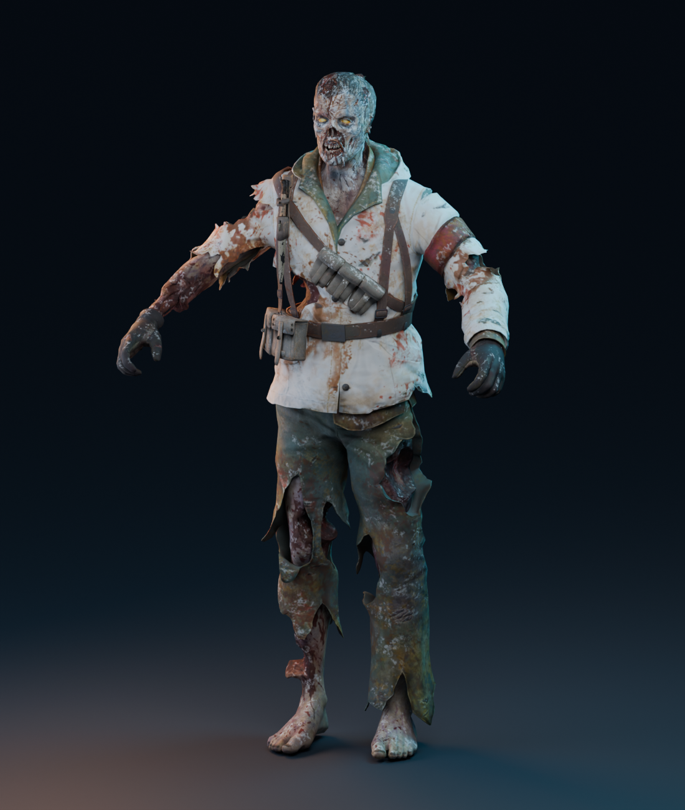
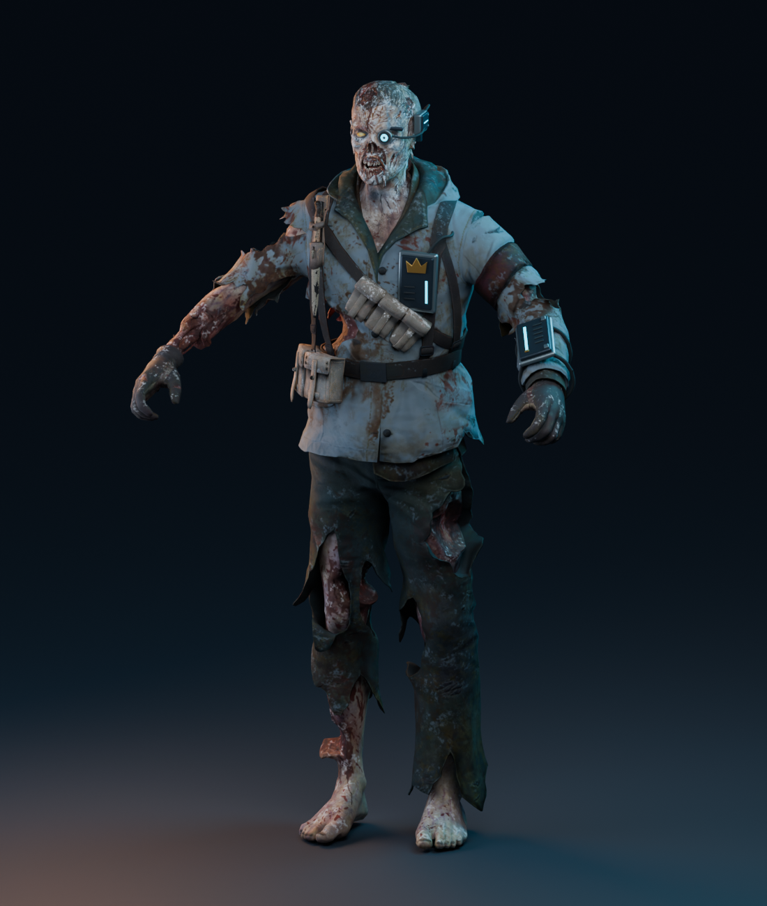
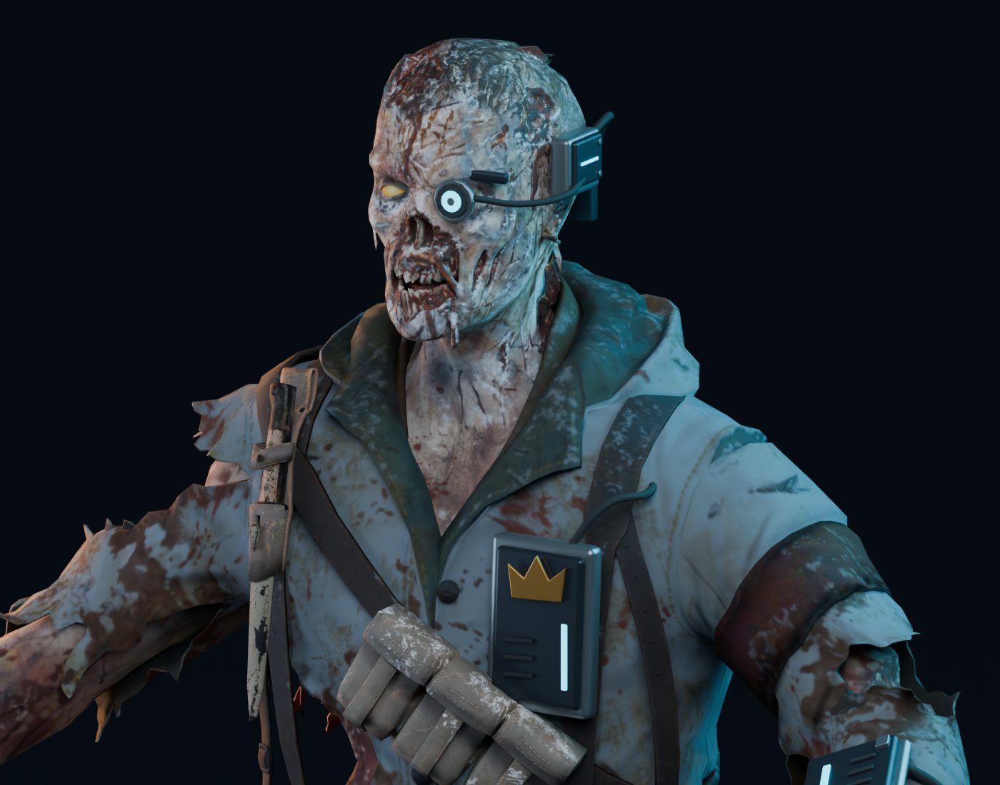
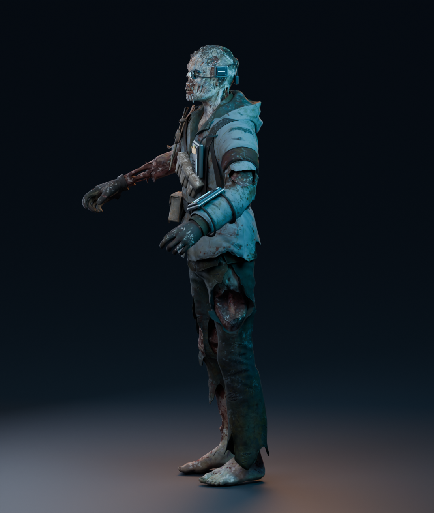
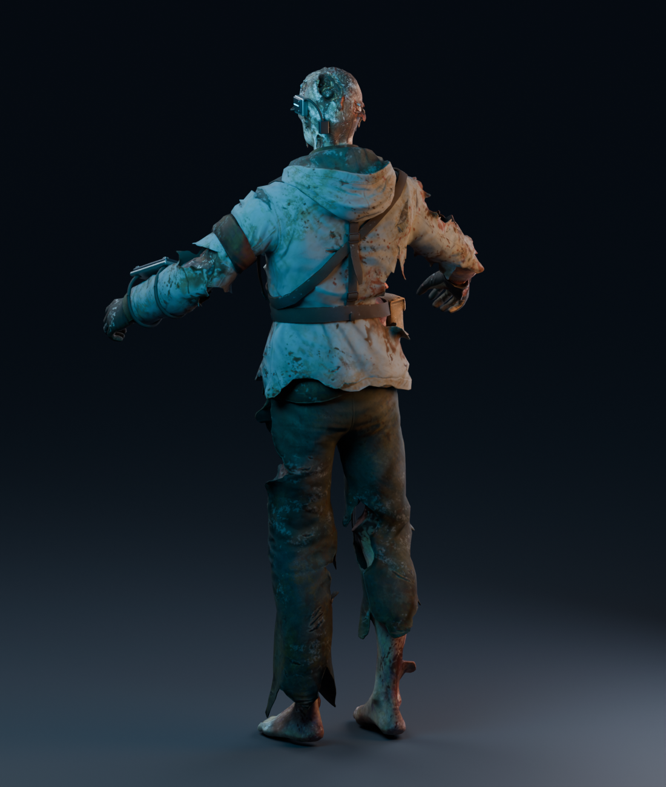

Reference 1 equipment on the original zombie: cracked cyan optic, chest monitor, spinal cell, layered shoulder armor, and fitted limb braces.
Blender renders under studio lighting. The two exported-model renders below show equipment revision 4. See the current full roster gallery. Older prototype renders are retained below for reference.





Open/download the editable Blender model · Asset details
Engine materials, seven LODs and dismemberment variants are authored. Native animation/ragdoll checks remain pending.